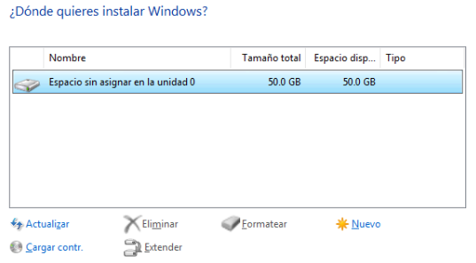

Sprint 5
Instalacio i Configuracio de Windows 10
Configuracio VirtualBox
Primer de tot, crearem una nova maquina virtual amb un nom, pot ser qualsevol, i escollim que el sistema operatiu sigui Windows 10 64bits.
En el seguent apartat, podem escollir la quantitat de recursos que Windows utilitza.
Es recomanat els seguents recursos.
En el apartat de disc, ficarem la mida del disc que pot utilitzar el SO, en aquest cas es deixa el predeterminat que es 50 GB.
Finalment, podem veure totes les caracteristiques de la maquina virtual abans de crear-la. Els recursos i la mida del disc es poden modificar en la configuracio de la maquina si es necessari.
En el moment de arrancar la maquina virtual, es necessari insertat l'arxiu ISO de Windows 10. En aquest cas s'utilitza la versio Enterprise pero es poden seguir els mateixos passos per a totes les versions.
Instalacio
Note
S'ha saltat totes les parts on solament s'ha de clicar seguent i/o triar l'opcio que necessitem de Windows.
En l'apartat d'instalacio, al ser la primera vegada que instalem el Windows haurem d'escollir la versio avansada.
Escollim el disc en que volem instalar Windows.
En la pantalla de iniciar sessio amb Microsoft, podem iniciar sessio utilitzant un compte de Microsoft o, podem entrar amb un usuari del domini, el qual sera un usuari local sense cap vinculacio amb alguna cuenta de Microsoft.
Escrivim el nom de l'usuari.
Finalment, tenim Windows instalat.
Particions
En la instalacio de Windows, es poden fer particions abans d'instalar el sistema, aixo es pot fer de la seguent forma:
En el moment d'escollit el disc, utilitzarem el boto nou.

Seguidament, sortira un requadre on podrem introduir la mida de la particio en MB.
Finalment, podem crear mes particions del disc o escollir una particio on instalar el Windows.
Punts de Restauracio
Els punts de restauracio es una caracteristica integrada a Windows on, es poden crear "versions" de diferents estats del sistema i retornar a ells.
En les propietats del sistema o buscant al buscador de Windows, es pot trobar com a proteccio del sistema.
Activar Punts de Restauracio
Primer, s'haura de activar els punts de restauracio. Per a aixo, s'haura de anar a configurar i activar la proteccio del sistema.
Crear punt de restauracio
En el menu de proteccio del sistema, podem crear la restauracio des de el boto crear.
Finalment, escrivim el nom del punt de restauracio i es creara automaticament.

En aquest cas, s'ha descargat l'archiu instalador de Chrome per a fer la prova.
Retornar al punt de restauracio
Per retornar a l'estat del punt de restauracio, en el menu de proteccio del sistema, en la part superior esta el boto de restaurar sistema.
Es mostrara una llista amb els diversos punts de restauracio del sistema, escollirem el que es necessita.
Verifiquem que hem escollit el punt de restauracio adient i acceptem.
Finalment es restaurara el sistema.
En la prova, es pot veure que el fitxer de Chrome ja no existex.
Instalacio de Programes
La majoria de programes s'instalen de la mateixa forma a Windows, en aquest cas s'utilitza Chrome.
El Chrome es pot descargar des de la pagina oficial. Una vegada descargat, fem doble clic al fitxer.
Apareixera la seguent pantalla on, ens indica que necessitem permisos de administrador i donar certs permisos del sistema al instalador. Al ser els administradors, cliquem que si.

L'instalador ens mostrara diverses finestres on solament cal clicar a seguent.
Finalment, ens mostrara la seguent finestra on podem escollir el buscador predeterminat que volem, en aquest cas s'ha escollit Brave.
Instalacio i Configuracio Windows Server
Instalacio
Note
L'instalacio fins de Windows Server conte els mateixos processos que el Windows normal. En la documentacio sol es mostren els diferents canvis que te respecte a aquest.
En la seguent pantalla, es pot escollir les 4 versions de Windows Server, hi han 2 les quals no contenen interficie grafica i, altres dues les quals tenen.
Les versions amb interficie grafica es diferencien al tindre "Experiencia d'escritori", en aquest cas s'utilitza una de les versions amb interficie grafica.
A continuacio, escriurem una contrasenya per a l'administrador, en el moment de la instalacio es el unic usuari el qual es pot afegir. A part, no es pot canviar el nom d'usuari.
Finalment, es fara la instalacio i podrem accedir al servidor.
Configuracio IP Fixa
Per configurar una IP fixa, ens dirigim a Panel de control -> Xarxes i Internet -> Centre de Dades i Recursos Compartits -> Canviar configuracio del adaptador.
Escollim l'adaptor que volem modificar i seleccionem les propietats.
Seleccionem "Protocol d'Internet versio 4" i el boto propietats per modificar la IPv4.
Finalment, podem configurar la IP necessaria.